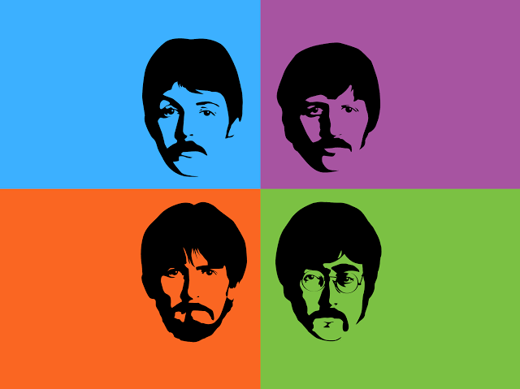
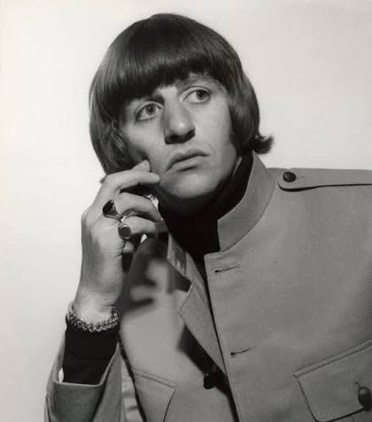

Meu primeiro post
Por: emily
Boas-vindas ao meu novo blog! Aqui vou compartilhar sobre cada integrante the beatles.
Vou compartilhar conhecimentos sobre beatles.

Por: emily
Boas-vindas ao meu novo blog! Aqui vou compartilhar sobre cada integrante the beatles.

Por: Emily
ohn Lennon foi cantor, compositor e um dos fundadores dos Beatles. Conhecido por suas letras criativas e personalidade marcante, escreveu diversos clássicos da banda e, após sua carreira solo, tornou-se uma voz importante em defesa da paz e da liberdade. .
Fonte: Jornal Opção
Por: Emily
Paul McCartney é cantor, compositor e multi-instrumentista. Reconhecido por seu talento melódico e versatilidade, criou algumas das músicas mais famosas dos Beatles e construiu uma das carreiras solo mais bem-sucedidas da história da música. .
Fonte: TecMundo

Por: Emily
George Harrison foi guitarrista, compositor e cantor. Conhecido como o "Beatle silencioso", trouxe influências da música indiana para a banda e compôs sucessos marcantes, destacando-se também por sua carreira solo. seus .
Fonte: TechTudo

Por: Emily
Ringo Starr foi o baterista dos Beatles e também cantor e compositor. Seu estilo de bateria simples e eficiente ajudou a definir o som da banda, e seu carisma conquistou fãs ao redor do mundo durante e após os Beatles. .
Fonte: Educa Mais Brasil
Por: Emily
Os Beatles foram uma banda britânica formada em Liverpool, em 1960, por John Lennon, Paul McCartney, George Harrison e Ringo Starr. Considerados um dos maiores e mais influentes grupos da história da música, revolucionaram o rock e a cultura popular com suas composições inovadoras, criatividade e impacto mundial. Entre seus maiores sucessos estão "Hey Jude", "Let It Be", "Yesterday" e "Come Together". Mesmo após o fim da banda, em 1970, seu legado continua inspirando artistas e fãs de todas as gerações. .
Fonte: BBC
Por: Emily
Os primeiros álbuns dos Beatles marcaram o início de uma revolução na música. Lançado em 1963, Please Please Me apresentou a energia da banda e sucessos como Love Me Do e Twist and Shout. No mesmo ano, With the Beatles consolidou o grupo com novas composições e grande sucesso de público.
Em 1964, os álbuns A Hard Day's Night e Beatles for Sale mostraram o amadurecimento da banda, trazendo músicas autorais cada vez mais criativas e populares. Esses discos foram fundamentais para o crescimento da Beatlemania e transformaram os Beatles em um fenômeno mundial, preparando o caminho para obras ainda mais inovadoras nos anos seguintes.
.
.